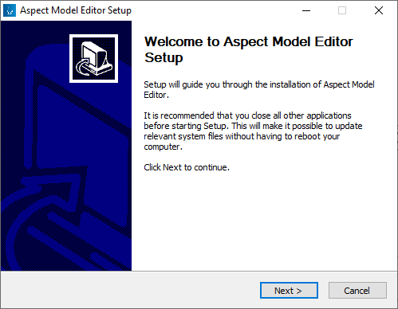
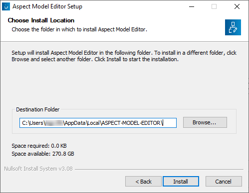
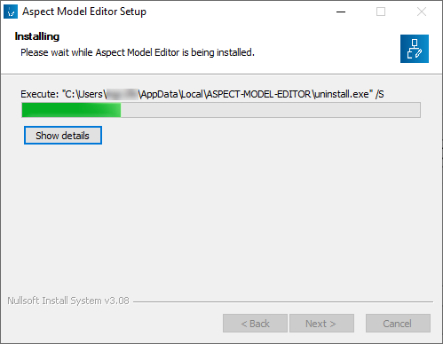
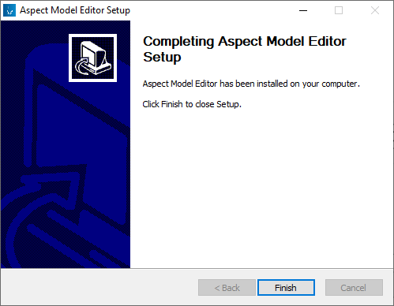
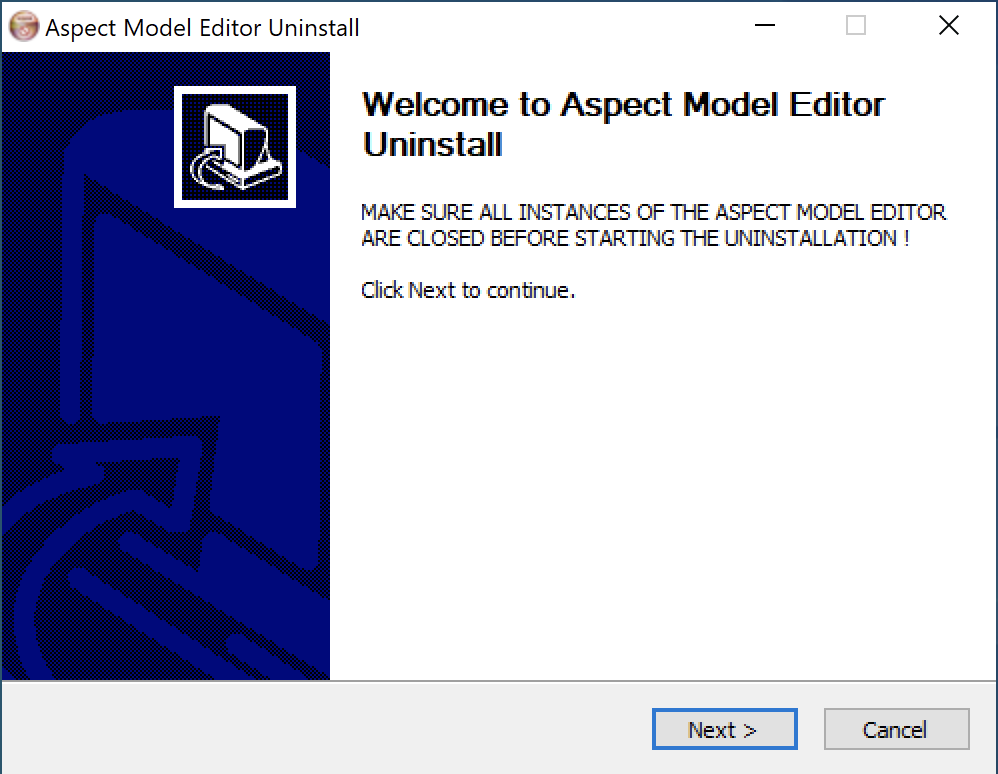
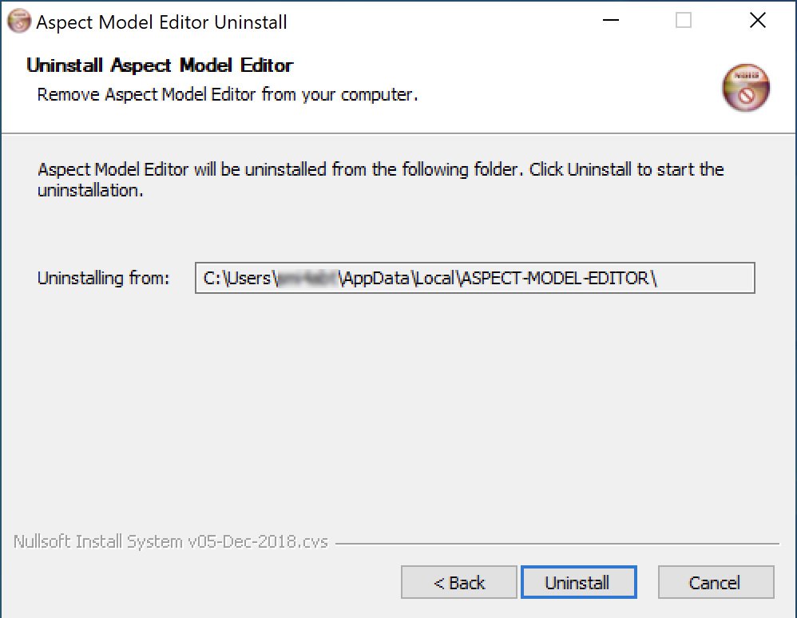
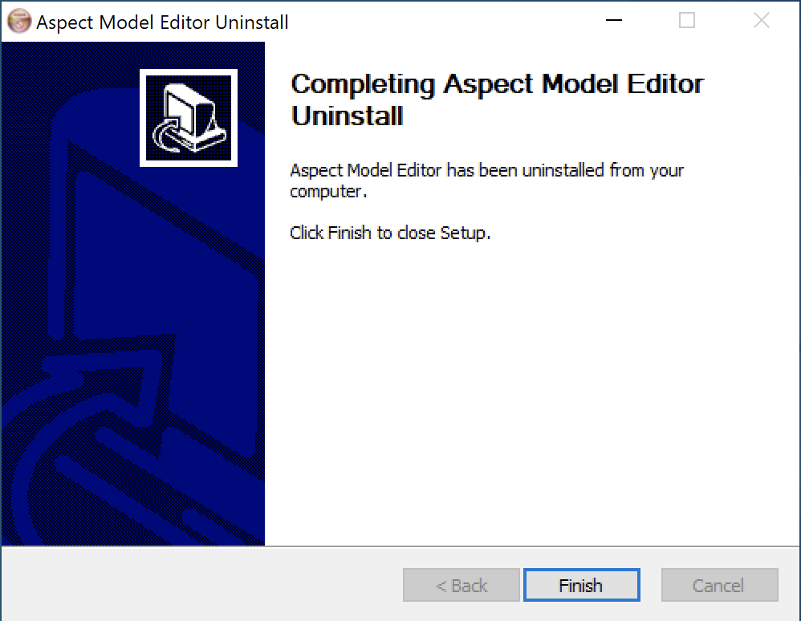

Install the Aspect Model Editor
Preparation
Before you install the latest version of the Aspect Model Editor, make sure you have covered the following:
-
Login with administrator permissions to install or uninstall the Aspect Model Editor.
-
If you have previously installed the Aspect Model Editor, see Upgrade.
-
Download the installation file for your system at Aspect Model Editor.
We offer assets for following OS:-
Linux
-
Mac
-
Windows
-
Install the Aspect Model Editor on Windows
To install the Aspect Model Editor, proceed as follows:
-
Download the executable installation file from the Aspect Model Editor releases.
-
Double-click the
.exefile to run the installer. -
Click Next on the Welcome screen.
 -
Select the preferred installation location.
-
Click Install.
Long paths and paths containing whitespaces may lead to incorrect installation or incorrect behavior of the application. Choose a short destination path without whitespaces – preferably those suggested by the installer by default. For further information see Known issues. → The installation is executed. The progress bar indicates the status of the process.
 -
Click Finish to close Setup.

→ After the installation you will find the Aspect Model Editor in the folder you chose previously. In addition to that, you will find a link on your desktop.
Start the Aspect Model Editor
To run the Aspect Model Editor, no administration permissions are required.
Use one of the following alternatives:
-
Navigate to the previously chosen installation location of the Aspect Model Editor and double-click the
Aspect-Model-Editor.exefile. -
On Windows, press the Windows key, type
Aspectto filter for the Aspect Model Editor, and click Open.
Verify the installation
To verify that your installation was executed successfully, proceed as follows:
-
Open the Aspect Model Editor.
-
Open the Movement example that came with the editor (see Load or start a new model).
-
Click Validate in the toolbar.
→ If the validation of the built-in example is executed, your installation was successful. In that case, the background validation service is working properly, and you can start working with the Aspect Model Editor.
For more information on validation, see Validation and notifications.
Uninstall the Aspect Model Editor
To uninstall the Aspect Model Editor, proceed as follows:
-
Close any running instance of the Aspect Model Editor.
-
Navigate to the installation folder of the Aspect Model Editor.
-
Double-click the
Uninstall.exeexecutable. -
In the Uninstaller dialog, click Next to continue.
 -
Click Uninstall to start the process.
 -
Click Finish to close the Uninstaller.

→ The Aspect Model Editor with all dependencies was deleted from your system.
| Alternatively, on Windows, you can also uninstall as follows: Open Windows menu → type Aspect Model Editor → click Uninstall → right-click on the Aspect Model Editor → click Uninstall. |
Upgrade the Aspect Model Editor
To upgrade the Aspect Model Editor to the latest version, proceed as follows:
-
First uninstall the existing installation. See Uninstall the Aspect Model Editor.
-
Run a new installation with your required version of the Aspect Model Editor. See Install the Aspect Model Editor.
| You can have only one installation of the Aspect Model Editor on your local machine. In case you have already an older version, uninstall it first and then install the latest version. |